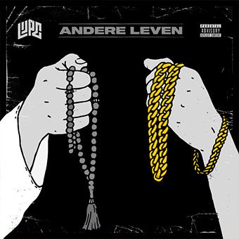
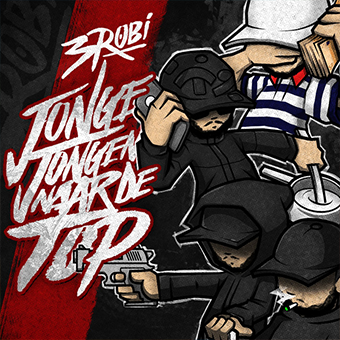
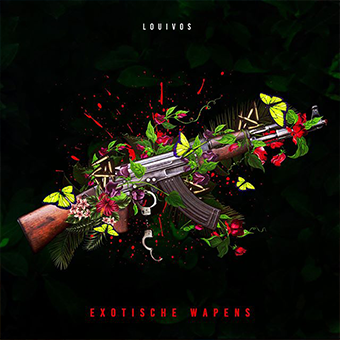
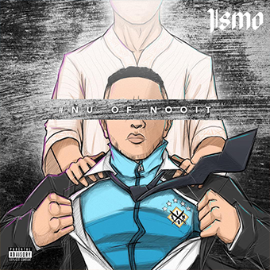
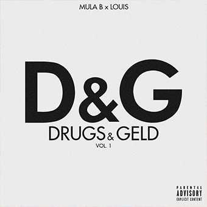
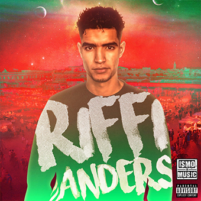

lijpe
andere leven
- 1. Voorwoord (Prod. Harun B)
- 2. Microfoon (Prod. Architrackz)
- 3. Andere Leven (Prod. Chahid)
- 4. Pleintjes (Prod. Architrackz)
- 5. Vergeet de Buurt Nooit (Prod. Serop)
- 6. Geen Film (Prod. Chahid)
- 7. Uit de Goot (Prod. Harun B)
- 8. Kapitein (Prod. DJ Stijco)
- 9. Le-Le-Le (Prod. Ghost & Denobeatz)

#robi
Jonge Jongen Naar De Top
- Barz (2:03)
- Owjee (3:05)
- Darbas (5:29) met LouiVos en Mula B
- Psychisch (3:01)
- Gekke Leven (3:00) met Lijpe
- Ben Actief (3:45)
- Anders (4:14) met Sevn en Josylvio
- Jonge Jongen Naar de Top (2:58)
- Zlatan Ibrahimovic (2:27)
- Fina Jou3 (5:04) met Chillouh en Iliass
- Casablanca / Marrakech (3:12)
- met Bartofso
totale tijdsduur: 38:18

louivos
Exotische Wapens
- Magazijn (3:28)
- Hasj Uit het Zuiden (3:37) met Pietju Bell
- Princess (2:35)
- Alarm (3:14) met Mario Cash
- Motors (2:27) met 3robi
- Ga Los (2:08) met Scarface
- Energy (3:17)
- Nog Steeds (3:35) met 3robi en Idaly
- Syrië (3:00) met Lijpe
- Homies Tuchten (3:29) met Mula B
- Zij Wilt Meer (3:04) met Bizzey
- Peilen (2:32) met Iliass
- Parkeer (2:48)
- totale tijdsduur: 39:14

ismo
Nu of Nooit
- Intro (3:05)
- Geen Partij (3:29)
- Grotere Plaatje (3:24)
- met Safi & Spreej
- Wie? (2:07)
- Doe Je Ding (3:27)
- Kan Niet Hangen Met Je (3:13) met Sevn Alias en MocroManiac
- Regenboog (3:29)
- Ik Kom Na Je Toe (2:57)
- Verder op Niks (3:16) met Lijpe
- Allemaal een Droom (3:46)

mulab & louisvos
D&G
- Lange Loop
- Electriciteit
- Dreams
- met Bartofso en 3Robi
- Vos
- Chossel een Beetje
- met 3Robi
- Rari
- Echekems
- met 3Robi
- Rennen
- Roley
- Plussen

riffi
ademnood
- ademnood
- lalala
- meesterplan
- daar met jou
- que pasa
- vallende ster
- vliegen